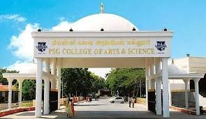

Today's Moments are Tomorrow's Memories
PSG College of Arts and Science (PSGCAS) is a prestigious autonomous institution located in Coimbatore, Tamil Nadu, established in 1947 by the PSG & Sons’ Charities Trust. It’s affiliated with Bharathiar University and has earned an A++ grade accreditation from NAAC, making it one of the top-ranked colleges in India — #11 in the NIRF 2024 rankings.

We offers both undergraduate (UG) and postgraduate (PG) programs in Computer Science. Specifically, we offer a B.Sc. in Computer Science, a B.Sc. in Computer Science with Data Analytics, and an M.Sc. in Computer Science. A Bachelor of Computer Application (BCA) is also available.
We offers a variety of Bachelor of Commerce (B.Com) and Master of Commerce (M.Com) courses. These include specializations like General, Corporate Secretaryship, Professional Accounting, E-Commerce, and Computer Applications. Additionally, we offer specialized B.Com programs in areas like Retail Marketing and Foreign Trade.
We offers several life science courses, including Biotechnology, Microbiology, and Zoology at the Bachelor of Science (B.Sc) level. We also offer an M.Sc. in Biotechnology. Additionally, We offer courses like Nutrition and Dietetics, and Food Science and Nutrition.